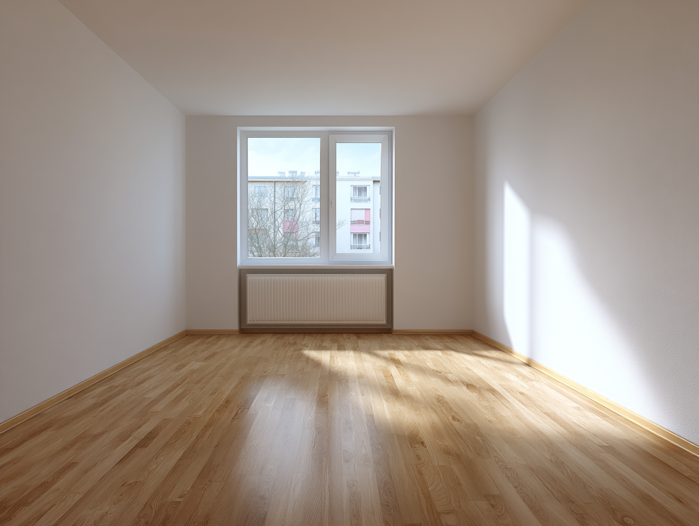
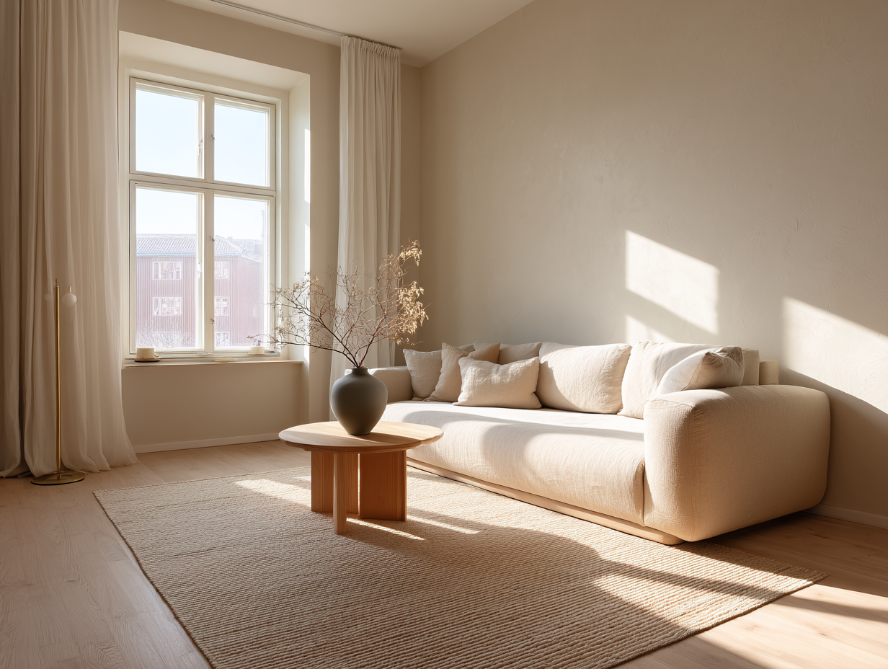
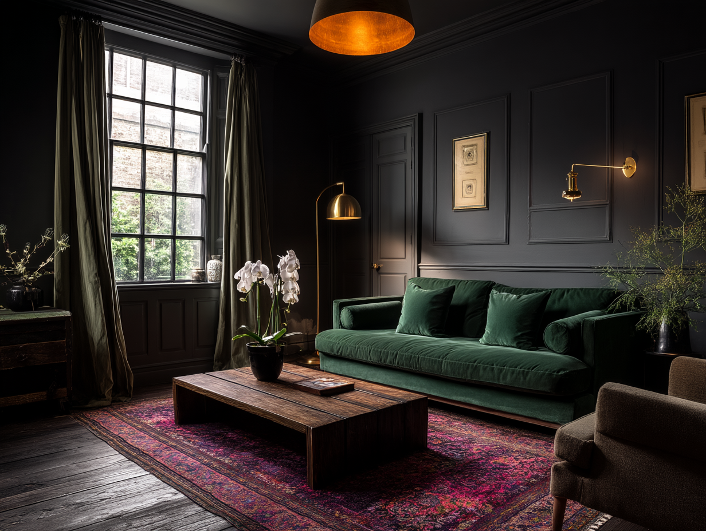
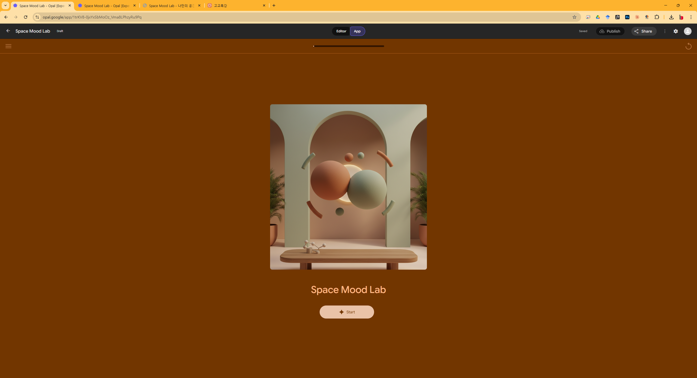

No. 01
Opening · 도입강의 20분
A · I · S · P · A · C · E · D · I · R · E · C · T · O · R
AI 공간
디렉터
단어가 공간을 만든다.
Lecture
100분 AI 특강
Audience
고등학생
Tool
Google Opal · Space Mood Lab
Date
2026
Part 01
오프닝
질문.
한 단어로 시작합니다. 여러분이 가장 먼저 떠올리는 그 단어가, 오늘 수업의 출발점입니다.
Q.FOR YOU
지금 자기만의 방을 꾸밀 수 있다면,
딱 한 단어로
어떤 느낌의 방을 원하나요?
Examples →
아늑한
힙한
깔끔한
시원한
미니멀한
Enter 키로도 추가됩니다 · 추가된 답변은 Part 3에서 다시 등장합니다
“
여러분이 말한 그 한 단어가,
사실은 엄청난 힘을 가지고 있습니다.
Part 02
AI와 인테리어,
변화의 한복판.
도면과 3D를 그리던 시대에서, 단어로 공간을 짓는 시대로. 디자이너는 사라지지 않습니다 - 다른 존재가 됩니다.
02 · 1지금까지의 인테리어디자인
손으로 그리고,
오래 매만지는 일.
~ 4 hr
A - 01
도면
평면, 입면, 단면 - 모든 치수를 손으로 결정
~ 8 hr
A - 02
3D 모델링
SketchUp · 3ds Max - 가상 공간 구축, 렌더링
~ 3 days
A - 03
자재 선택
샘플북, 시공 견적, 클라이언트 미팅 반복
그런데 —
이 긴 과정이, 이제는 한 문장으로 시작됩니다.
02 · 2같은 방, 다른 결과
FRAME 01
문장 한 줄이면
10초.

아무것도 없는 빈 방
SOURCE
PROMPT
"미니멀한
자연광 거실,
오크 바닥,
린넨 소파"
자연광 거실,
오크 바닥,
린넨 소파"

미니멀 자연광 거실
~ 10s
DESIGNER WORK · 3D MODELING
3 ~ 4시간→ 10초
02 · 3같은 방, 다른 문장
FRAME 02
문장만 바꿨더니,
전혀 다른 공간.

좌측 슬라이드와 동일한 빈 방
SOURCE
NEW PROMPT
"드라마틱한
다크무드,
벨벳마감,
따뜻한
간접조명"
다크무드,
벨벳마감,
따뜻한
간접조명"

드라마틱 무드 거실
~ 10s
SAME ROOM · DIFFERENT SENTENCE
하나의 방을, 단어로 다시 짓는다.
02 · 4그렇다면, 디자이너는?
디자이너가 사라진다?
아닙니다. 오히려 더 중요해집니다.
왜냐하면 - AI에게 무엇을 만들어라 지시하는 일은, 여전히 사람의 몫이기 때문입니다.
␣
또는 클릭으로 다음
02 · 5새로운 역할의 이름
AI 공간 디렉터.
A · ANALOGY
영화 감독.
지시
배우의 연기
"창밖을 보면서, 목소리를 낮추고, 3초간 멈춰."
구체적 지시가 좋은 연기를 만든다.
구체적 지시가 좋은 연기를 만든다.
B · OUR ROLE
공간 디렉터.
지시
AI의 공간
"북유럽 스타일, 오크 바닥, 간접조명, 세이지 그린."
구체적 단어가 좋은 공간을 만든다.
구체적 단어가 좋은 공간을 만든다.
02 · 6왜 ‘단어를 잘 고르는 것’이 중요한가
막연한 지시는
막연한 결과를 부른다.
A
영화 감독
"대충 슬프게 해봐."
VS
"창밖을 보면서, 낮은 목소리로, 3초간 멈춰."
B
공간 디렉터
"따뜻하게 해줘."
VS
북유럽 스타일, 오크 바닥, 간접조명, 세이지 그린.
Part 03
프로세스 시연,
그리고 인계.
키워드를 고르고, 단어를 바꾸고, 공간이 다시 태어나는 과정을 라이브로 봅니다. 그리고 여러분의 PC 앞으로 넘어갑니다.
The whole 100-minute lecture
compressed into one line.
compressed into one line.
단어가
공간을
만든다.
— 오늘의 핵심 명제
03 · 1오늘 여러분이 할 일의 전체 그림
키워드에서 완성까지.
YOU · 당신이 한다
AI · AI가 한다
01
YOU
키워드 선택
아늑한 · 자연광 · 원목 · 미니멀
02
AI
프롬프트
조립
조립
선택된 단어를 영문 문장으로 변환
03
AI
이미지 생성
문장을 공간 이미지로 시각화
04
YOU
비교 / 수정
단어 하나만 바꿔서 다시 시도
05
YOU
완성
의도와 가장 가까운 결과 확정
03 ↔ 04 사이를 반복하면서, ‘의도에 가장 가까운’ 단어 조합을 찾아갑니다.
03 · 2이 시연을 하는 이유
사례를 다 보여주기엔,
100분은 너무 짧습니다.
하고 싶었지만 못한 것
AI를 활용한 실제 인테리어 디자인 사례 -국내외 스튜디오의 작업 흐름, 결과물의 다양성, 도구 비교까지 다루기엔 시간이 부족합니다.
대신 우리가 할 것
가장 기본적인 한 가지 - 단어를 바꾸면 공간이 바뀐다 - 를 Opal 앱으로 직접 체험합니다.
TAKEAWAY
기본 동작을 손에 익히면, 그 다음의 모든 사례가 같은 원리로 보이기 시작합니다.
03 · 2직접 보여드리겠습니다
Space Mood Lab,
지금 이 화면에서 시연.
OPAL APP · LIVE SCREEN

03 · 3방금 시연에서 보신 것
같은 방, 다른 단어, 다른 공간.
RUN 01
미니멀
따뜻한
자연광
원목
웜 화이트
밝고 차분한 거실.
RUN 02
미니멀
드라마틱
자연광
원목
웜 화이트
긴장감 있는 무드 거실.
단어 하나의 차이가, 공간 전체를 바꾼다.
03 · 4이제 여러분 차례입니다
PC 앞으로,
단어를 골라보세요.
01
SOLO · 개인 탐색
키워드를 골라
공간을 바꿔본다.
공간을 바꿔본다.
스스로 5~6개의 단어를 선택하고, 한 단어를 바꿔보며 공간이 어떻게 달라지는지 직접 확인합니다.
25 min
02
DUO · 2인 1조 미션
가상 클라이언트를 위해
팀으로 설계한다.
팀으로 설계한다.
제시된 클라이언트 브리프에 맞춰, 두 사람이 단어를 골라 협업으로 하나의 공간을 완성하고 발표합니다.
30 min · + 25 min 발표
PC에서 접속 →
[강의 당일 안내]
Opal 앱 배포 후 실제 URL로 교체
Part 04
AI 시대,
디자인 교육의
새 방향.
오늘 여러분이 체험한 것은 시작일 뿐입니다. 이 변화를 3년간 깊이 배울 수 있는 곳이 있습니다.
04 · 1인테리어 교육이 달라지고 있습니다
배우는 것이 바뀌면,
가르치는 것도 바뀝니다.
Before · 기존 교육
도구 숙련 중심
도면 제도·3D 소프트웨어에 수 년
기술 습득에 시간의 대부분 소모
결과물을 보기까지 긴 시간 필요
'그림만 그리는 디자이너' 양성
기술 습득에 시간의 대부분 소모
결과물을 보기까지 긴 시간 필요
'그림만 그리는 디자이너' 양성
→
After · 우리 학과의 교육
A.I 증강 디자이너
AI로 완성도 높은 결과를 먼저 경험
학습의 즐거움이 기술적 고통을 압도
현장 문제를 소통하고 해결하는 실무자
기술은 AI가, 방향과 판단은 사람이
학습의 즐거움이 기술적 고통을 압도
현장 문제를 소통하고 해결하는 실무자
기술은 AI가, 방향과 판단은 사람이
04 · 2A.I 증강 디자이너의 4대 핵심역량
그리는 기술 너머의 것들.
04 · 3우리 학과는 이렇게 다릅니다
결과 먼저, 도구는 그 다음.
OUTCOME-FIRST
결과 중심 학습
AI로 완성도 높은 결과물을 먼저 경험합니다. 학습의 즐거움이 기술적 고통을 압도하는 역방향 학습.
오늘 체험한 방식
A.I WORKFLOW
AI 증강 워크플로우
구상부터 시각화까지 전 과정을 AI로 지능화. 10종 실전 도구를 완벽히 마스터합니다.
생산성 압도
HYPER-LOCAL PBL
현장 밀착 프로젝트
인근 상권 대상 'A.I 디자인 앰뷸런스' 등 실제 현장에서 성공 경험을 쌓습니다.
실전 포트폴리오
MICRO DEGREE
마이크로 디그리
A.I 공간 시각화 특화 인증(12학점). 졸업과 동시에 AI 전문성을 공식 증명합니다.
차별화된 경쟁력
04 · 42년 후, 이런 사람이 됩니다
입학에서 실무까지, 4학기 성장기.
1
1-1 · 기초 입문
발견하는 학기
공간을 보는 눈을 키우고, AI를 처음 만나 "나도 할 수 있다"는 자신감을 얻습니다
드로잉 · 2D CAD · AI 탐험
2
1-2 · 주거 실무
만드는 학기
실제 주거 공간을 설계하고 3D로 구현하며 AI 시각화를 실전에 적용합니다
3D 모델링 · 시공 · AI 시각화
3
2-1 · 상업 고도화
깊어지는 학기
브랜드 공간을 기획하고 법규·시공까지 다루며 전문가 수준의 AI 시각화를 익힙니다
상업 설계 · 법규 · AI 심화
4
2-2 · 통합·취업
증명하는 학기
캡스톤 프로젝트로 포트폴리오를 완성하고, 마이크로 디그리를 취득하며 취업에 도전합니다
캡스톤 · VR/AR · 포트폴리오
"
오늘 여러분이 고른
그 단어 하나가,
미래의 첫 설계입니다.
단어로 공간을 만드는 경험, 기억해주세요.
더 깊이 배우고 싶다면, 경남정보대학교 인테리어디자인과에서 기다리겠습니다.
더 깊이 배우고 싶다면, 경남정보대학교 인테리어디자인과에서 기다리겠습니다.
Department
인테리어디자인과
University
경남정보대학교
Contact
입학처 문의